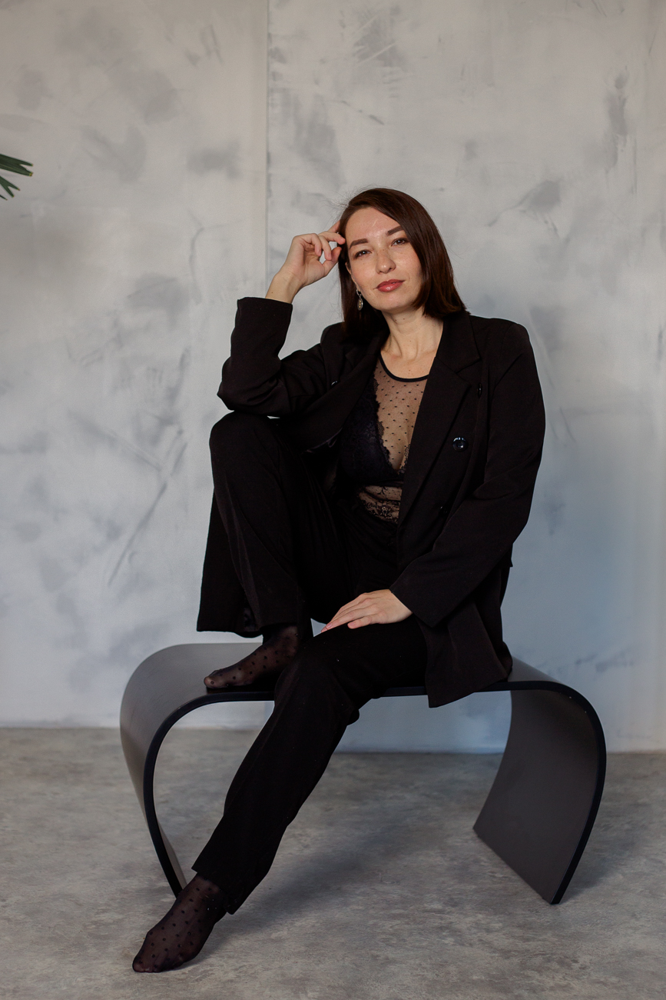
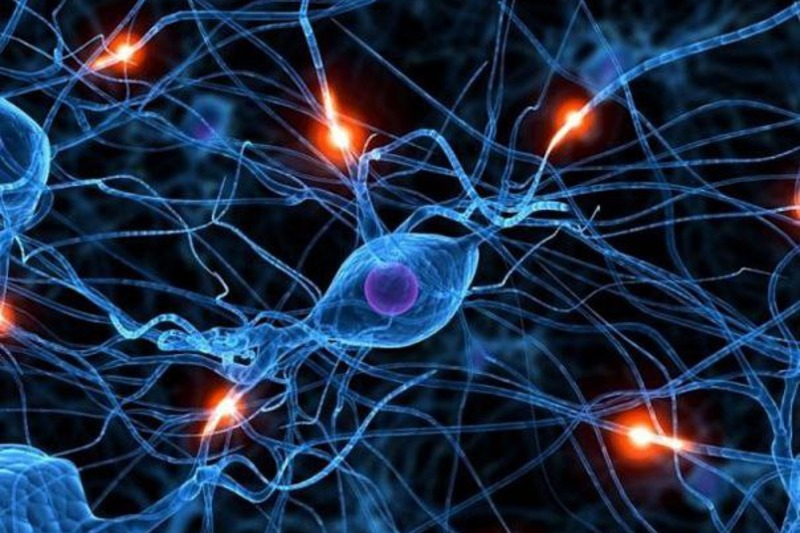
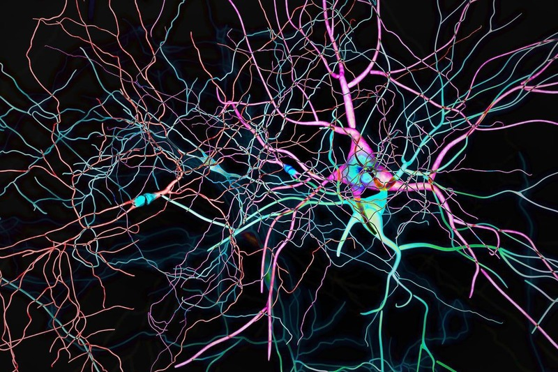
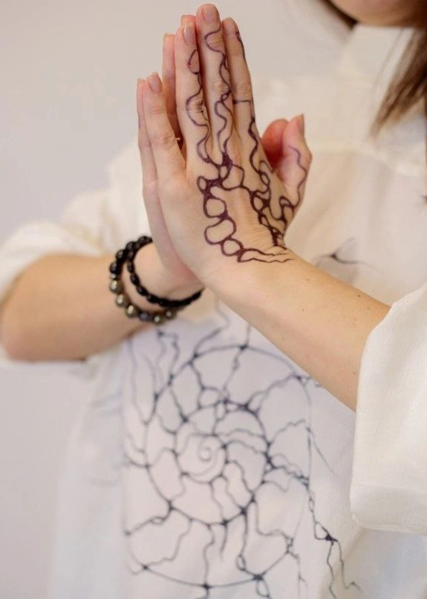
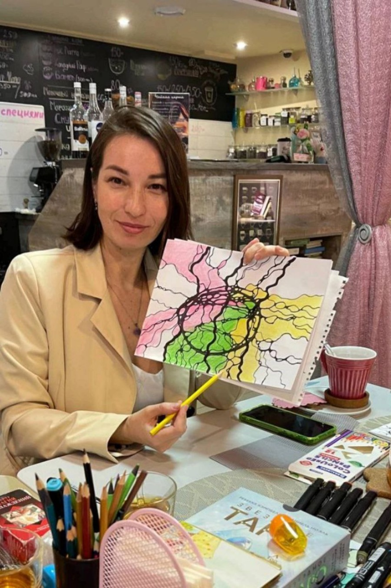
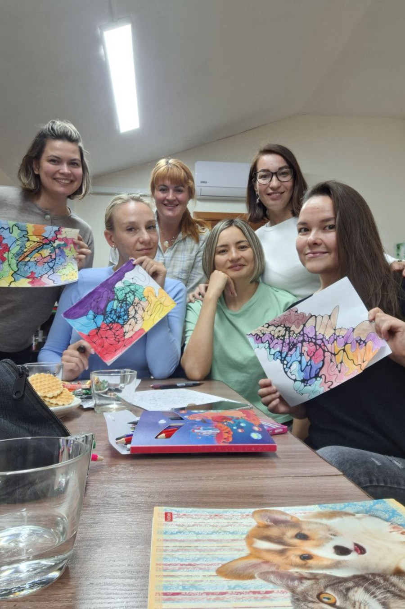

Нейро клуб по Нейрографике от Светы Арон

НЕЙРО СЁРФИНГ РЕАЛЬНОСТИ
Здесь мы будем создавать свою реальность!
Этот клуб для Вас, если Вы хотите
Создать себя нового
Мы открываем возможность обнаружить истинное "я" внутри себя и вернуться к нему, обретая гармонию и понимание внутренних потребностей
Поиск жизненного предназначения
Нахождение жизненного пути - это важное путешествие, которое позволяет нам обрести смысл и направление в жизни.
Достижение целей и мечты
Осуществление всех своих планов начинается с того, что мы должны научиться мечтать, и тогда мы сможем вдохновиться и добиваться желаемого успеха
Расширение сознания
Расширение своего сознания - это ключ к обогащению жизни, открывающий новые горизонты понимания и возможностей в этом мире
Душевное исцеление и восстановление энергии
Исцеление души и возвращение утраченной энергии из прошлых негативных событий позволяют обрести покой и силы для вызовов жизни.
Жизнь с осознанием
Искусство осознанной жизни заключается в умении внимательно воспринимать и ценить каждый момент, который мы переживаем, вместо того чтобы механически проходить через него.

Светлана Арон
Организатор духовных фестивалей, ретритов. Проводник в Места силы, как Аркаим и Алтай. Проводник в КВАНТОВУЮ и Нейро-медитации.
- Создатель уникальных курсов по нейро-медитациям "Путь к себе", "Пробуждение", "Любовь к себе".
- Провожу КВАНТОВЫЕ медитации на гвоздях.
- Использую в работе ПСИХОСИНТЕЗ, который позволяет выявить первопричину любой проблемы.
- Вся моя работа основана на установлении связи между подсознанием и сознанием клиента. В результате мы получаем все ответы на вопросы и тотальное исцеление.
Листай
Что такое нейрографика?

Процесс Нейрографики
Нейрографика— это творческий метод, который помогает осознать свою проблему и найти ее решение через рисование по специальному алгоритму. Метод был предложен психологом и коучем Павлом Пискаревым в 2014 году.
С помощью рисования определенных линий и фигур человек лучше понимает свои неосознаваемые мысли, чувства, идеи и постепенно приходит к решению проблемы. Иногда нейрографику называют разговором со своим подсознанием при помощи линий и форм.

Применение в современном мире
Создавая нейрографический рисунок, мы в первую очередь заполняем линиями весь лист, осваиваем всё его пространство. И видим, что места пересечений этих линий образуют углы.
Углы воспринимаются мозгом как конфликты, и их много по всему рисунку, они остренькие и пока еще колются.И чем больше углов-конфликтов, тем глубже будут проработка твоего запроса.
Да, здравствуют новые нейроные связи!
Возможности Нейрографики

Нейрографика- твоя новая картина мира.
Визуальное мышление появилось в истории человечества намного раньше, чем речевое. В развитии ребенка речь формируется позже, чем умение видеть и понимать образы. И именно поэтому настолько эффективна работа через образ. Человек сам, своей рукой рисует определенный образ своей ситуации. И через научно обоснованный алгоритм перерисовывает его.
“Таким образом, меняется представление о ситуации.Мешающие нам установки, нейронные связи меняются на новые, нужные нам. Помогающие достичь результата.”

Смысл Нейрографики
Мы рисуем не просто картинки.
“Каждая – это решение индивидуальной задачи,в процессе рисования которой фрагмент психического гармонизируется, связывается с целым».”

Принципы Нейрографики:
Образ интегрирует смыслы. Смыслы концентрируют состояния. Проблема всегда порождение разума. Решение обладает качеством бионики. Гармония ведет к удовлетворению. Вселенная умещается на острие карандаша мастера. Любая задача имеет графическое решение.
“И это так, потому что любая задача может быть переведена в знак, символ, архетип, который является основой для образного моделирования, визуального мышления. И тогда, трансформация знака, трансформация символа позволяет таким образом запустить механизм (творческого) мышления, по определённым правилам рисования нейрографики, что это приведет к состоянию решения. В этом смысле совершенно любая задача жизни — задача бизнеса, личной жизни, внутренней гармонии, коммуникации — имеет графическое решение.”
{kind=link}
{kind=link}
{kind=link}
{kind=link}
{kind=link}
{kind=link}
{kind=link}
{kind=link}
{kind=link}
{kind=link}
{kind=link}